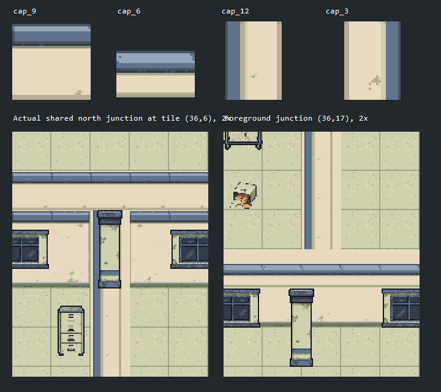

Building C: why the walls do not connect
Source study, 2026-11-08. Current assembly rejected. This page shows the existing defect, not a corrected map.
Snapshot d04e3c6. The shared-cap resolver replaces junctions with horizontal images. The logical wall cell remains filled, but the visible vertical trim branch is missing.

Lossless inspection of actual exported assets and F0 map crops. Top: 32px tiles enlarged 4x. Below: shared wall at x=36, north edge y=6 and foreground edge y=17, enlarged 2x. These are diagnostic crops, not concept artwork.
Established approaches
| Reference | Mechanism | Implication |
|---|
| RPG Maker tutorial | Compatible quarter-tile assembly | Every permitted feature seam must match; A4 wall layout has its own format. |
| Tiled terrains | Neighbor matching and missing-pattern inspection | Metadata selects supplied art; missing junctions remain missing. |
| Tiled Automapping | Authored input/output rules | One logical wall guide can drive several presentation layers. |
| Godot terrains | Neighbor peering bits | The required combinations must exist in the tileset. |
Repair gate
Resolve shared geometry once. Supply compatible school-plaster transitions. Verify straight runs, outer and inner corners, all T orientations, cross junctions, doors, windows and columns. Prove two adjacent rooms and classroom/WC geometries before full-building migration. Forty-seven tiles is not a universal requirement.
Source GIDs, object identities and hashes · Detailed English research and findings · Existing map board